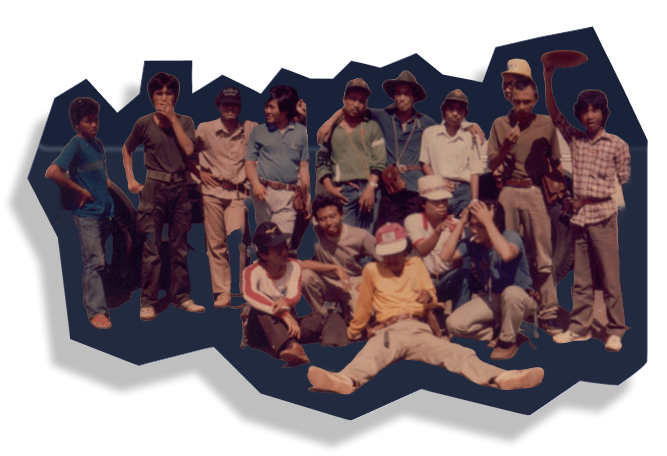

HMGF merupakan singkatan dari Himpunan Mahasiswa Geofisika yang berkedudukan di program studi Geofisika, Universitas Gadjah Mada. Himpunan ini berfungsi sebagai wadah bagi mahasiswa Geofisika untuk berkolaborasi dalam mempelajari, meneliti, dan mengkaji berbagai fenomena dinamika kebumian. Dalam menjalankan perannya, HMGF dilandasi oleh integritas dan iktikad baik guna mencapai tujuan mulia yang sejalan dengan Tri Dharma Perguruan Tinggi.
PERTAMA
Berawal dari banyak masalah yang terjadi, maka pada tahun 1988 dalam kegiatan Studi Lapangan mahasiswa Geofisika angkatan 1987, 1986, 1985 dan sebelumnya, muncullah pemikiran perlunya sebuah himpunan mahasiswa untuk mengatasi berbagai permasalahan yang sering terjadi.
Pada tahun 1990, mahasiswa Geofisika mengadakan pertemuan yang diikuti oleh mahasiswa angkatan 1987, 1988, 1989, dan 1990. Dalam pertemuan ini mereka bersepakat untuk membentuk HMGF. Pengurus HMGF pun dibentuk, begitu juga dengan program kerja.
KE-DUA
KE-TIGA
Meskipun sempat vakum dan dinamika organisasi terus berkembang, semangat para anggota Geofisika tetap membara untuk terus menyatukan persepsi. Kegiatan keakraban dan ruang diskusi intensif terus dibangun antar-angkatan guna merancang struktur organisasi yang lebih kokoh.
Berdasarkan Musyawarah Mahasiswa Geofisika UGM pada hari Sabtu, 11 Desember 1993 yang berisi mahasiswa angkatan 1988, 1990, 1991, 1992, dan 1993, maka Alhamdulillah, setelah melalui perjalanan panjang selama kurang lebih 5 tahun, akhirnya terbentuklah Himpunan Mahasiswa Geofisika UGM secara utuh, lengkap dengan AD/ART, Pengurus HMGF, Program Kerja dan fans/pendukung.
KE-EMPAT